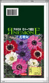
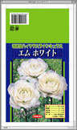
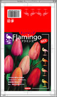
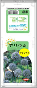

アイリス銘花
あかちゃん
ちゅーりっぷ
アネモネAX
アネモネブランダ
アネモネポルト
おしゃれてっぽうゆり
おとめゆり
オリエンタルゆり
お庭のシンボル
となる植物
かほりすいせん
カラー
カラフル バラエティ
カラーハイブリッド
カンナ F
カンナ
コンテナバラエティ
キャンディ
チューリップ
グラジオラス
カラーピクチャー
グラジオラス
クリスタルバイカラー
グラジオラス
スーパーピノキオ
グラジオラス
バイカラーMX
くろゆり・ばいもゆり
グロリオサ・リリー
コルチカム
コンテナリリー
すかしゆり
コンテナリリー
ミゼット
コンテナ栽培に
向く植物
サフラン
シラー
すいせんバラエティP
すいせん小型品種
すいせん八重咲
すかしゆり
スノードロップ
ダリアギャラリー
ダリアコンテナ用
ダリアポンポン咲き-A
ダリアポンポン咲き-B
ダリア大輪咲き
ダリア中輪咲き
ダリア超巨大輪
ダリア徳用
チューリップ
スプレー咲
チューリップ
フリンジ咲
チューリップ
ゆり咲
チューリップ
八重咲
ヒヤシンス
フェスティバル
フリージア
てっぽうゆり
バラエティ
球根ベゴニア
球根ベゴニア
ハンギング バラエティ
ボタニカル
チューリップ
ボリュームパック
リレーすいせん
ラナンキュラスU
丸得チューリップ
球根つりがねそう
巨大輪アネモネ
クレオパトラ
香りを楽しむ。
秋咲ステルンベルギア

秋植え球根 花壇のS
秋植え球根 切花のW
春植え球根
ベストセールス
世界の切花最前線
切花向き大型カラー

切花用ハイクラス
ラナンキュラス
早咲きクロッカス
特販
特別企画ゆり
日の本
野放し球根
野放し球根 はなにら
野放し球根
ムスカリ バラエティ
ポットカラー
大株ダリア切花用
花のある暮らし。
チューリップMIX
秋を彩る。
乙女の姿
クロッカス 花壇用
カサブランカ特別企画
かたくり
改良やまゆり
アリウム
ギガンチューム
パッション
サンダーソニア
ファーストクラウン
アリウム
出ません!花粉!!
エレガントリリー

フラミンゴ ミックス
パワーガーデン
しだれアリウム
寄せ植えすいせん

アリウム
バビアナ
ブローディア
チオノドクサ
エランチス
フリージア最新品種
ホメリア
イキシオリリオン
ミニアイリス
オキザリス
オキザリスT
ロムレア
ワトソニア